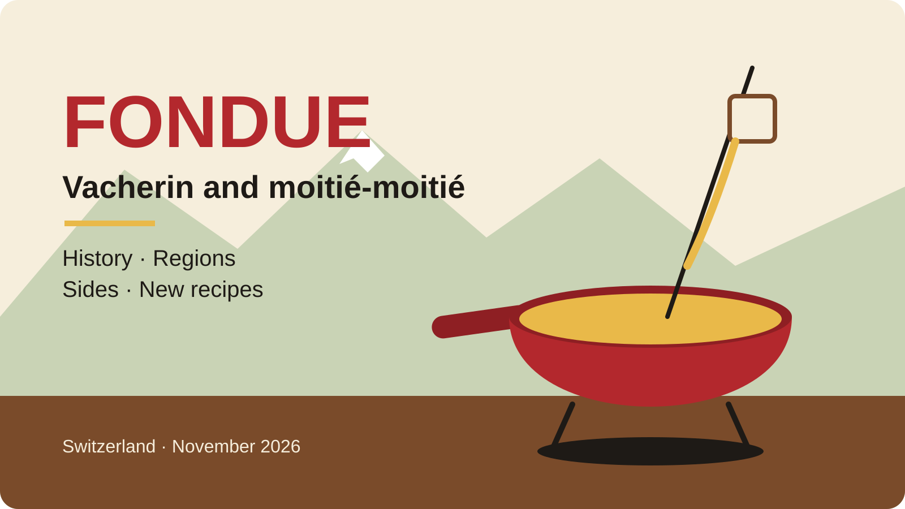

patrick@fribourg:~$ cat prompt.txt sources/* | assistant > deck.md # for the prompt nerds 🤓

Speaker notes: “Hello. Tonight we talk about a dish everyone thinks they know: cheese fondue.”
Claude · ChatGPT · any assistant · prompt FR/EN at ok-ia.ch/mdviewer/prompt-presentation.html